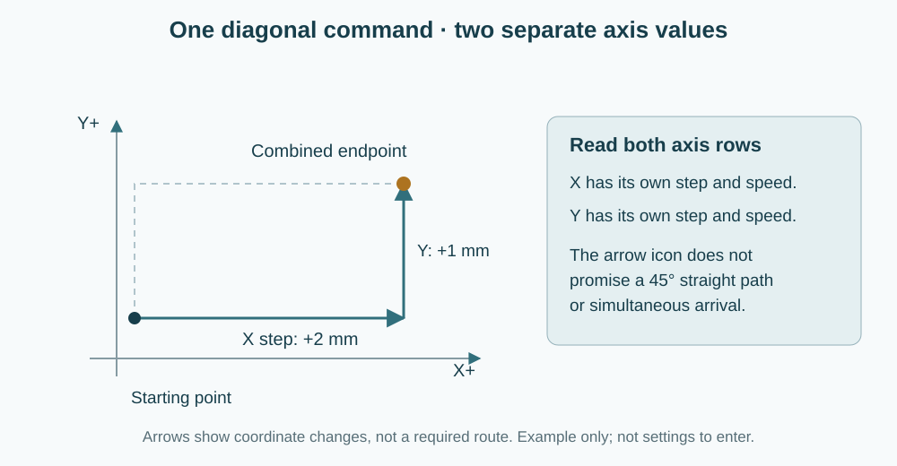
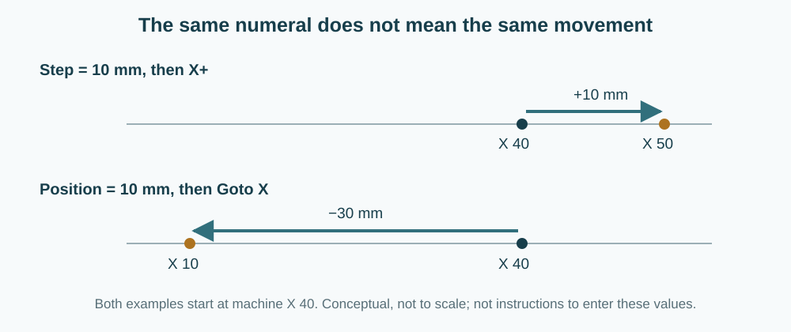

RADONIX · ROUTERXYZAC+RTCP · CHAPTER 7
Operator Manual · English · 8 October 2026
Manual Motion and Position Jog
Move an axis deliberately: choose the right kind of movement, check the direction and values, and know what ends the command before you begin.
Expanded draft for review. Numerical examples explain control behaviour. They are not recommended speeds, clearances or destinations for the installed machine.
7.1 Choose the kind of movement before touching a control
Manual motion means that you request movement directly through the operator controls instead of letting a machining file determine the next move. It is useful during preparation and approved positioning tasks. It still moves the real axes in Normal mode, with the actual cutter, holder, bridge and fixtures in place.
The word jog is commonly used for this direct manual movement. In this application, the manual controls provide three different ways to describe what you want: keep moving while a direction control is held, move by a specified step, or move to a specified machine coordinate. These requests can look similar on the screen but end in different ways.
| Kind | What you specify | Normal ending |
|---|---|---|
| Continuous Jog | An axis, direction and speed. | Releasing the held direction command requests its jog to stop. |
| Step Jog | An axis, direction, step distance and speed. | The issued finite step finishes. Releasing the button does not cancel it. |
| Goto X / Goto Y / Goto Z | An absolute machine-coordinate destination and speed for one axis. | The finite move reaches its destination. Releasing the button does not cancel it. |
“Finite” means that the request contains an intended end position or distance. It does not mean that the movement is necessarily short. A large step or a distant destination can produce substantial travel after a brief click. Choose the movement type and inspect its values before you issue the request.
Manual movement is also different from changing a work origin. Moving X changes the physical position. Setting work X zero changes the reference used to describe that position. If your task is to establish a work origin, follow the later Work Origins and Zero Setting procedure; do not confuse editing a reference with moving to a coordinate.
The diagonal controls request movement on X and Y together. They use the same selected continuous or step behaviour, but each axis uses its own speed and, in step mode, its own distance. They need additional care because both routes are involved. Their operation is explained in Section 7.8.
This chapter teaches the controls and a repeatable operating method. It is not a cutting technique, probing procedure or method for recovering a trapped cutter. Use the installed machine procedure for those tasks and obtain assistance if the required physical movement is unclear.
7.2 Find the axis rows, direction controls and mode
Start by reading the manual-motion area as a set of related controls. The direction buttons request motion. The nearby fields describe speed, step distance or destination. The mode determines how a direction button behaves. The position readouts show the controller's current reported position; they are not the same as the destination fields.
The main axis rows are X, Y, Z, A and C. Each has its own velocity, step and position values (mm/s and mm for XYZ; degrees/s and degrees for A/C), with a corresponding Goto command. Read across the correct row. Editing the X speed does not establish the Y speed, and entering a Z destination does not prepare an X movement.
| Control or field | Meaning | Question to ask |
|---|---|---|
| X+, X−, Y+, Y−, Z+, Z−, A+, A−, C+, C− | Request the named axis in its positive or negative direction, using the selected jog mode. | Which physical direction does this mean on this installation? |
| Continuous Jog / Step Jog | Select the behaviour of the direction controls. | Will release request a stop, or will one finite step continue? |
| V(mm/s) | The axis's base jog speed in millimetres per second. | Is this the approved speed before applying the jog percentage? |
| Step(mm) | A positive displacement magnitude for a step command. | How far will one accepted step request travel? |
| Position(mm) | An absolute machine-coordinate destination for that axis's Goto command. | Is this a destination, rather than a distance or work coordinate? |
| Jog percentage | Scales the speed captured for a new manual-movement request. | Am I reading the jog percentage rather than the machining-feed percentage? |
| Goto X / Goto Y / Goto Z | Start a finite single-axis move to the corresponding Position value. | Have I checked the full route to that machine coordinate? |
| Pause in the manual-motion area | Stops all motion while preserving the main program cursor. | Do I understand its effect on any retained machining-program state? |
Use labels and accepted values
The mode control displays the selected behaviour. Read Continuous Jog or Step Jog instead of relying only on its colour or position. Step Jog is off at each launch; the selection is session-only and is not saved. The Goto commands remain destination commands regardless of the selected jog mode.
The direction signs describe coordinate directions. X+ increases X; X− decreases X. They do not promise a universal left or right from every viewing position. Likewise, Y and Z directions must be learned on the installed machine. See Chapter 5 for the meaning of positive and negative coordinates.
The additional gantry motor YG is handled as part of the configured Y arrangement. The ordinary operator rows are X, Y, Z, A and C. Do not search for a separate YG field to correct bridge alignment; that belongs to machine setup and recovery.
FIGURE 7-1 · APPLICATION SCREENSHOT REQUIRED
The complete manual-motion area
Supply an English main-window screenshot showing the X/Y/Z/A/C rows, all three field headings, Goto buttons, direction and diagonal controls, selected jog mode, jog percentage and nearby Pause controls. Include the Machine position panel for comparison.
Suggested image: assets/images/07-manual-motion-panel.png. Number the controls and identify the separate machining-feed percentage so that the two percentages cannot be confused.
7.3 Prepare for a deliberate manual movement
Before a manual movement, establish four things: the machine can accept the request, the requested direction is understood, the whole route is clear, and you know how to stop this kind of movement. A small button or short click does not make these checks optional.
Complete operator login where required, confirm the intended connection and distinguish Simulation from Normal mode. Simulation changes what you can verify physically: a successful simulated move does not establish that the real cutter clears a clamp. Check the actual installed setup before physical use.
| Check | What to establish |
|---|---|
| Access and connection | You have operator access and the machine is operational in the intended mode. |
| Operation state | No conflicting operation owns the movement. Relevant readiness and alarm indications are understood. |
| Reference | For Goto, every configured motor is homed. For other manual movement, follow the installed procedure for the current reference state. |
| Axis and direction | The command corresponds to the physical movement you intend, from your actual viewing position. |
| Route and surroundings | The tool, holder, head, bridge, material, fixtures and other people permit the complete movement and stopping response. |
| Mode and values | The correct jog mode, axis speed, jog percentage and relevant distance or destination have been checked. |
| Stopping method | You know whether release requests stopping or whether a finite move needs a separate stopping command. |
Homing requirements differ between controls
The reviewed Goto controls require the complete machine to be homed, including the additional gantry motor. The ordinary direction-jog admission does not impose that same all-motors-homed check. This can be useful within an approved preparation or recovery procedure, but it is not a promise that movement before homing is appropriate in every situation.
If the reference is uncertain, do not use displayed absolute positions to infer a clear destination. Follow Homing the Machine and the installation's approved recovery rules. Do not try to bypass an unavailable Goto by accumulating steps toward an uncertain absolute location.
Manual movement does not plan around obstacles
A single-axis direction or Goto command does not inspect clamps or automatically raise Z before horizontal travel. If the cutter is low, an X movement remains an X movement at that height. Any preliminary clearance movement must be part of the approved procedure, checked in its own right.
Do not use a manual jog as an improvised tool-release, probing or collision-recovery operation. If the tool is embedded in material or the bridge position is questionable, establish the correct recovery method before moving. A control becoming enabled is not a physical inspection of the situation.
7.4 Enter and confirm a value before requesting movement
Entering a value and issuing movement are separate actions. Changing V(mm/s) prepares a speed for a later request. Changing Step(mm) prepares a distance. Changing Position(mm) prepares a destination. None of these edits, by itself, is a request to move the axis.
Make edits while the machine is settled and the parameter fields are available. The ordinary application policy locks the jog parameters during movement, active machining, file loading, homing and positioning. A field becoming unavailable while a move is active is therefore expected; do not rely on changing it midway through travel.
- Identify the axis row and the field heading.
Say the intended meaning to yourself, for example “X step distance” or “Z machine-coordinate destination.” This prevents a correctly typed number from being placed in the wrong field.
- Read the current accepted value.
A previous operator or saved session may have left a different speed, distance or destination. Do not assume the displayed value is a factory default or a suitable value for the current task.
- Enter the approved value in the field.
Check the complete number, including sign, decimal point and unit. Step magnitude and speed are positive values; the direction button supplies the sign of a step. A destination itself may be negative when that coordinate is appropriate.
- Confirm the edit with Enter.
The bound parameter editors commit through Enter or normal field validation. Use an explicit confirmation before a movement request, then reread the accepted display. If you decide against the edit before committing it, Escape restores the accepted value.
- Resolve any rejection before continuing.
An error or restored previous value means you must establish what was actually accepted. Do not press a direction or Goto control hoping that the typed draft will be used.
- Check the related controls.
For a step, check mode, speed and jog percentage as well as distance. For Goto, check the current Machine position, destination, speed and whole route.
| Example field entry | Meaning | What it does not mean |
|---|---|---|
| X V = 10 | Base X jog speed of 10 mm/s before the jog percentage. | Move X by 10 mm. |
| X Step = 10 | A 10 mm step magnitude for X. | Move to machine X 10. |
| X Position = 10 | Destination machine X 10 mm for Goto X. | Move 10 mm from wherever X is now. |
The table is a meaning comparison, not a set of values to enter. A number accepted by the editor is not automatically suitable for the machine or the task. Field limits and runtime movement limits serve different purposes, and neither can see every fixture.
Read decimal places without guessing
The main-window parameter fields can suppress trailing zeros. A displayed 1, 1.0 or 1.000 can represent the same length. They also have finite display precision; do not infer physical accuracy from the number of decimal places. Use the accepted number format of the actual field and recheck the resulting value after committing it.
Do not treat closing and reopening the application as a way to clear potentially unsuitable jog values. These operator parameters belong to the saved settings. Recheck them at the beginning of work and after a handover.
7.5 Use Continuous Jog as a held direction command
In Continuous Jog, a direction control requests ongoing movement while its accepted press remains held. You choose the axis, direction and speed, then control when to request stopping by releasing the held command. This is useful when the approved task calls for operator-observed movement rather than a pre-entered distance.
Continuous does not mean that the axis can move forever or ignore its limits. Controller limits, faults and stop requests can prevent or end travel. It also does not mean that releasing the control produces zero stopping distance. The machine must respond and decelerate according to its motion configuration.
- Complete the pre-movement checks.
Confirm the route and axis direction. For a first familiarization exercise, use the supervised procedure and an unobstructed area; do not learn the control while approaching a fixture.
- Select Continuous Jog while stopped.
Read the displayed mode name. Do not infer the mode from how the previous movement behaved.
- Set and confirm the axis V value and jog percentage.
Use the approved values for the task. The Step and Position fields do not set the travel distance of this continuous direction request.
- Press and hold the intended direction control.
Observe the physical axis and the corresponding position readout. Keep the pointer and your attention under deliberate control rather than switching windows during the movement.
- Release the held control to request stopping.
Allow for the actual stopping response. Verify that travel has ended before issuing another action or treating the position as settled.
- Reassess before the next movement.
Each new request starts from the new position. Check whether clearance, direction or the required speed has changed.
Do not combine input sources casually
The same direction command can be associated with a screen control and a configured keyboard shortcut. The application tracks accepted held inputs. If you hold more than one input for the same continuous command, releasing only one can leave another held input active. Operate through one deliberate input method and release all held movement inputs when stopping.
If motion does not stop as expected after release, use the appropriate stopping response. Do not spend time testing whether the pointer, a key or a window change is responsible while an unsafe movement continues.
| Item | Effect on this request |
|---|---|
| Axis and +/− button | Select the moving axis and direction. |
| V and jog percentage | Determine the requested speed captured when movement begins. |
| Step value | Does not turn continuous movement into a finite step. |
| Position value | Does not act as a destination for a continuous direction button. |
| Release of the held command | Requests that continuous jog to stop when no held source for that command remains. |
Do not use a mode change as your normal way to stop. The mode editor is ordinarily unavailable during motion, and changing future control behaviour is a different action from deliberately stopping the current movement.
7.6 Use Step Jog for one known displacement
In Step Jog, a direction press requests one finite displacement using that axis's Step value. The sign comes from the direction button. With a positive magnitude entered in Step, X+ requests a positive X displacement and X− requests a negative X displacement.
The request is issued when the direction press begins. Letting go does not cancel the accepted step, and holding the button is not the method for setting its distance. This is the essential difference from Continuous Jog. Use a separate motion-stop command if an issued step needs to be interrupted.
- Prepare the axis and route.
Check clearance for the entire configured displacement from the current position, not merely for an initial small movement.
- Select Step Jog while stopped.
Read the selected mode. Do not assume that a quick click on a direction button always means a step.
- Set and confirm the axis Step value.
Use the approved positive distance in millimetres. Check the decimal point, then check the speed and jog percentage separately.
- Press the intended direction once.
Release normally and observe the resulting movement. Do not hold the control expecting continuous travel or click repeatedly to make an uncertain move “take.”
- Wait for the requested movement to finish.
Check the settled position and the physical result. If the move stops early or a message appears, investigate before assuming the full distance was travelled.
- Recheck before another step.
The next step starts from the new position. Reassess remaining clearance rather than counting clicks as a substitute for observing travel.
| Starting machine X | Step and direction | Expected coordinate if the move completes normally |
|---|---|---|
| 40 mm | Step 2 mm, X+ | 42 mm. |
| 40 mm | Step 2 mm, X− | 38 mm. |
| −10 mm | Step 2 mm, X+ | −8 mm. |
| −10 mm | Step 2 mm, X− | −12 mm. |
These are arithmetic examples for a stationary, established starting position. They do not override movement limits or guarantee completion. If a request is rejected or interrupted, its intended endpoint is not evidence that the axis actually reached it.
Separate distance from speed
A smaller step reduces the requested displacement; it does not necessarily reduce the selected speed. A lower speed does not shorten an incorrectly large step. Check both values. Near an object, use only the approach method, distance and speed approved for that task; a small-looking number is not a universal clearance rule.
An additional accepted step while the same jog is still progressing can add to its previous target, rather than starting a fresh distance from the number you happen to see at that instant. Repeated presses can therefore extend pending travel. Wait for the current move to finish before making the next deliberate adjustment.
Do not issue rapid repeated presses as an informal distance counter. Rejections, interruptions, movement still in progress or an overlooked mode can make “five clicks” an unreliable description of the final position. For learning and ordinary deliberate adjustment, issue one request, observe its result, then decide the next request.
Changing the work origin does not change the meaning of a positive or negative step. The step is a displacement along the selected axis. See the distinction between position and distance if the difference from Goto is still unclear.
7.7 Combine axis speed and jog percentage correctly
The V(mm/s) field gives an axis's base jog speed. The separate jog percentage scales that speed for a new manual-movement request. Both values matter. Reading only the percentage leaves you without the base value; reading only V leaves you without the selected scale.
The relationship is: requested jog speed equals the axis V value multiplied by the jog percentage, divided by 100. It applies to continuous direction movement, step movement and the corresponding single-axis Goto command. For a diagonal request, the calculation is made separately for X and Y.
| Axis V | Jog percentage | Requested speed for the new move |
|---|---|---|
| 20 mm/s | 100% | 20 mm/s. |
| 20 mm/s | 50% | 10 mm/s. |
| 20 mm/s | 10% | 2 mm/s. |
| 40 mm/s | 50% | 20 mm/s. |
These values demonstrate arithmetic, not suitable speeds for your machine. Notice that the same 50% can give different speeds when the base values differ. The percentage is not a universal “slow” or “safe” setting.
Know when the values take effect
The application captures the speed for a jog request when that request begins. The jog percentage is not a live feed slider for steering an already accepted jog. The ordinary parameter policy also locks these edits during motion. Stop and settle the movement before changing its preparation values, then check the values used for the next request.
The default jog percentage spans 5–100%. It has no zero setting for stopping. The machining-feed percentage is a different control, used for the machining program. Lowering that other percentage does not provide a general stop for manual movement. Learn the location of each before operating.
Requested speed is not a promise of constant observed speed
The machine accelerates and decelerates, and its configured limits remain in force. A short step may end before the axis reaches the requested speed. That alone does not mean the value was ignored. Do not increase a setting simply because a short observed move looked slower than expected.
The top-strip V readout estimates the combined commanded X/Y/Z movement from position changes. It is not necessarily equal to one axis's entered V, particularly during acceleration or diagonal movement. It is also not an independent physical measurement of motion or proof of standstill.
Keep the units clear. A speed of 10 mm/s is equivalent to 600 mm/min. A machining file's feed number is not automatically in the same unit as the V field. Refer to Chapter 5's speed-unit examples before transferring any approved value between sources.
Choose operating speeds from the installed task procedure. This manual does not select a cutting feed, approach speed or acceptable stopping distance for a particular tool and fixture.
7.8 Treat a diagonal command as two axis movements
The four diagonal controls combine a positive or negative X request with a positive or negative Y request. They are convenient for moving in both horizontal directions, but their arrow icons do not establish the exact geometric path or promise a 45-degree movement.
Each axis uses its own V value, scaled by the common jog percentage. In Step Jog, each also uses its own Step value. If the two values differ, the distances or speeds differ. The application issues the two axis requests together; this is not the same as asking a machining program to follow a specified straight contour at one coordinated path speed.
| Combination | X request | Y request |
|---|---|---|
| X− and Y+ | Decrease X. | Increase Y. |
| X+ and Y+ | Increase X. | Increase Y. |
| X− and Y− | Decrease X. | Decrease Y. |
| X+ and Y− | Increase X. | Decrease Y. |

Prepare both rows
Before a diagonal movement, read X V and Y V, and in step mode read both Step values. Check that the entire two-axis route is suitable for the present height of the tool. Z is not raised automatically by a diagonal button.
For example, with illustrative X Step 2 mm and Y Step 1 mm, the X+/Y+ command requests those two changes. It does not request “one 2 mm diagonal step” or automatically make the Y distance equal to X. Different speeds, acceleration and travel limits can also mean that the axes do not finish together.
- Confirm that a two-axis movement is appropriate.
If the route needs a carefully controlled clearance or contour, use the approved procedure rather than assuming a diagonal jog will trace it.
- Check the selected mode and both axes' values.
Confirm the intended sign combination and the common jog percentage.
- Issue one deliberate diagonal command.
In Continuous Jog, hold and then release the command to request stopping of both axes. In Step Jog, one press issues the two finite displacements.
- Observe both movements and their result.
If either movement differs from the approved expectation, stop and investigate. Do not compensate by immediately pressing another direction.
If the second axis request is rejected after the first was accepted, the application requests the first axis to stop. This handling does not guarantee that no partial movement occurred. Following a rejected or interrupted diagonal command, recheck the actual settled positions of both axes before deciding the next action.
A controller limit may affect one axis differently from the other. Do not rely on a limit to shape a diagonal path or stop both axes at a convenient point. The machine limits are not a representation of your clamps and material.
7.9 Move one axis to an absolute machine coordinate
Goto X, Goto Y and Goto Z request a single-axis move to the value in that axis's Position(mm) field. The value is an absolute machine coordinate. It is not a distance from the present location and not a coordinate measured from the current work origin.
The application requires the whole machine to be homed before these commands are available. This includes YG as well as the main display axes. Goto also requires the relevant axis and overall operation state to permit manual movement. A correctly entered destination cannot bypass those conditions.

- Check complete homing and a settled machine.
Read Homed, the axis readiness indications and any relevant message. Finish or resolve other operations first.
- Read the current Machine position for the axis.
Use the Machine position panel, not Work position. Establish whether the proposed destination is greater or smaller than the current machine coordinate.
- Enter and confirm the Position value in the correct row.
Check sign, decimal point and millimetres. Reread the accepted value. Editing it does not itself start movement.
- Check speed, jog percentage and the complete route.
The axis uses its jog-speed preparation. There is no automatic preliminary Z lift for Goto X or Goto Y.
- Press the matching Goto button once.
The selected Continuous Jog or Step Jog mode does not change this command into a held move or a step. The finite destination request continues after button release.
- Observe and verify the settled result.
A request-accepted message means the request was admitted, not that the axis has arrived. If interrupted or limited, establish the actual resulting position before another command.
| Current machine X | Position entry | Requested change |
|---|---|---|
| 40 mm | 50 mm | Positive 10 mm toward machine X 50. |
| 40 mm | 10 mm | Negative 30 mm toward machine X 10. |
| 40 mm | 40 mm | The same machine coordinate, not another 40 mm step. |
| −20 mm | −5 mm | Positive 15 mm toward machine X −5. |
These examples assume valid coordinates inside the applicable travel range. The controller constrains jog targets to operational travel limits. An out-of-range entry is therefore not a reliable way to request the typed endpoint; movement may be limited rather than arriving at that number. Use an approved in-range destination and verify the result, rather than relying on a limit to choose it for you.
Work references do not redefine the Goto field
If Work X is 10 but Machine X is 410, entering Position 10 requests machine X 10. It does not mean “stay at work X 10.” Changing the selected work reference or the file's absolute/incremental coordinate mode does not turn the manual Goto field into a work-coordinate or relative-distance field.
Goto is also different from Go Ref or parking. Those are separate positioning operations with their own route logic. Do not borrow their expected preliminary movement and assume it applies to a single-axis Goto.
If you stop a destination move and then issue the same Goto again, it is a new request toward the same stored machine coordinate from the new position. Recheck the route and all conditions first; do not treat the second press as an automatic recovery procedure.
7.10 Use keyboard movement with the same care as screen controls
Keyboard shortcuts are configurable. The presence of X and Y direction buttons does not mean that the computer's arrow keys, number pad or any familiar key combination has automatically been assigned to them. Use only the documented assignments for this installation.
A configured direction shortcut invokes the same jog command and therefore follows the selected Continuous Jog or Step Jog mode. In continuous mode, the accepted held shortcut maintains the direction request until its release. In step mode, the initial press issues the finite step; releasing the key does not cancel that move.
A Goto shortcut, if assigned, remains a destination command. It uses the accepted Position value in the corresponding axis row. A short key press can therefore start substantial travel if that destination is distant. The keyboard does not make the stored destination less important.
| Situation | Expected control behaviour | Operator practice |
|---|---|---|
| A direction shortcut is held in Continuous Jog | The held command requests ongoing motion. | Release deliberately and verify stopping. |
| A direction shortcut is pressed in Step Jog | One finite step is requested. | Observe completion; use a separate stop if necessary. |
| The operating system repeats a held key | The shortcut manager suppresses repeat retriggering. | Do not use key-repeat timing as a distance-control method. |
| The main window loses activation | The shortcut manager releases its held commands. | Stop deliberately before switching tasks; a finite step or Goto is not cancelled merely by key release. |
| A shortcut is missing, disabled or conflicting | It may not provide the expected command. | Have the actual assignment checked; do not try random alternatives. |
Know which control has keyboard focus
Keyboard focus means the control currently receiving ordinary keyboard input. In a numeric field, Enter normally confirms the edit. A focused direction button can respond to Space or Enter as a press/release control. Those are different contexts. Check the selected control before using a key that might operate it.
Do not assume that typing in a field disables every configured machine shortcut. Confirm and finish the edit, then make a separate deliberate movement request. Avoid casual keyboard use while another person is working near the machine.
Use one movement input method at a time
Holding a screen direction button and a shortcut for the same command can leave two accepted input sources active. Releasing one is not necessarily releasing the other. Keep manual movement deliberate, avoid mixed held inputs, and release all movement keys and buttons before another activity.
Shortcut configuration, duplicate assignments and the keyboard enable setting are covered in the later Keyboard Shortcuts chapter. For ordinary operation, have the approved mappings available and practise their meaning in a supervised setting. Do not create a new movement assignment during a live positioning task.
7.11 Stop the movement and verify the resulting state
Choose the stopping action according to the movement you actually issued. Releasing a held continuous command, interrupting a finite step and stopping all machine motion are related actions, but they are not interchangeable in every context.
For immediate danger, use the installed emergency response. For ordinary interruption through the application, use the appropriate motion-stop control and observe the response. Do not use window closing, changing mode, editing a value or reducing the wrong percentage as an improvised stop.
| Situation | Action and expected meaning |
|---|---|
| One continuous direction command is held | Release all held inputs for that command to request its jog stop; verify that the movement settles. |
| A continuous diagonal command is held | Release its held inputs to request stopping of both participating axis jogs. |
| An accepted step is still travelling | Use a motion-stop command if it must be interrupted. Button release does not cancel it. |
| An accepted Goto is still travelling | Use a motion-stop command if it must be interrupted. Releasing the Goto button does not cancel it. |
| Several motion sources may be active or the input state is uncertain | Use the appropriate all-motion stopping response; do not assume releasing one input ends every movement. |
The nearby Pause buttons share an all-motion command
The Pause controls in the run, jog and motion areas share the same all-motion Pause command. They preserve the main program cursor and cancel auxiliary continuations. Use the separate Reset button when TP0 must also be rewound after stopping.
Pause also requests all motion to stop, but preserves the main machining program's cursor rather than requesting that reset. This distinction concerns the machining program. It does not promise that a cancelled manual step will later continue for its untravelled remainder.
Neither travel-stop request independently proves that the spindle has stopped rotating or that physical access is permitted. Follow Chapter 2's stopping and access guidance and the installed machine procedure.
- Release held movement inputs and issue the required stop.
Do not keep a movement key pressed while trying to establish a stopped state.
- Wait for the physical and reported stopping response.
An accepted request means the command was accepted, not that standstill is instantaneous.
- Read the settled position and any message.
For an interrupted finite move, the final position may be between the original starting point and the requested target.
- Resolve the reason for stopping.
If movement was unexpected, establish the mode, fields, direction and command used before requesting another move.
- Prepare the next request as a new decision.
Check the new starting position, remaining route and approved values. Do not assume a repeat click resumes exactly the uncompleted distance.
A repeated Goto has a different meaning: it requests the same stored absolute destination again. That distinction is another reason to identify the command before restarting. After an interruption, do not alternate between steps and Goto without checking which coordinate or distance each request will use.
If a stop is rejected, movement continues unexpectedly or machine state is uncertain, follow the appropriate emergency or recovery procedure and obtain assistance. Do not rely on a still readout alone to determine the physical condition.
7.12 Investigate an unavailable control or an unexpected result
When a movement does not behave as expected, first establish whether the request was unavailable, rejected, accepted but limited, or interrupted after starting. These are different situations. Do not repeat the request until its meaning and the resulting machine position are understood.
| Observation | Check | Avoid assuming |
|---|---|---|
| Direction controls are unavailable | Operator access, connection, axis readiness, loading and active machining or auxiliary operations. | That changing to a keyboard command will bypass the condition appropriately. |
| Goto is unavailable although direction jog is possible | Complete-machine homing and the destination command's other readiness conditions. | That the Goto button is faulty. |
| The parameter fields cannot be edited | Whether movement, stopping, program activity, loading or a managed operation still exists. | That an edit can be made while motion is being carried out. |
| The axis keeps moving after button release | Whether Step Jog or Goto was issued, or another continuous input remains held. | That every manual move must stop on release. |
| The step is larger than expected | Accepted Step value, units, selected mode and any additional presses during travel. | That the duration of a click defines step length. |
| Goto moves in an unexpected direction | The current Machine position and absolute Position entry, including its sign. | That a positive destination always means positive travel. |
| The axis stops short of the typed destination | Stop/fault messages, operational limits and the actual accepted request. | That an accepted request proves arrival at the typed number. |
| A diagonal move is not symmetrical | Both axes' speeds, step distances, limits and any partial rejection. | That the icon promises equal movement or a fixed-angle path. |
| The speed differs from the entered V | Jog percentage, acceleration/deceleration, axis limits and whether the display is combined speed. | That V must equal the instantaneous displayed speed. |
If movement is already unexpected, act on stopping first. The table is for investigation after the situation has been brought to the appropriate controlled state; it is not a reason to delay a necessary stop.
Report the request in a reproducible way
A useful report includes the selected mode, axis/direction or Goto button, accepted V, jog percentage, Step or Position value, starting and resulting Machine position, and any error message. Also identify whether you used a screen control or a configured shortcut and whether the application was in Simulation or Normal mode.
The Goto command records its requested starting position, destination and speed and can report acceptance or rejection. An acceptance entry is not an arrival record. Detailed reporting also differs between command types, so do not assume every ordinary direction press has the same report entry as Goto.
FIGURE 7-4 · APPLICATION EXAMPLE REQUIRED
A checked destination request and its result
Supply a labelled Simulation example showing the Machine position, the accepted Position field, axis V, jog percentage and the corresponding Goto request in the report. If showing before/after views, identify the initial coordinate and actual settled final coordinate.
Suggested image: assets/images/07-goto-request-and-result.png. State explicitly that the example values are instructional and that an accepted report entry is separate from verified arrival.
Do not change travel limits, gantry settings, axis direction or sensor assignments to solve an unexplained jog result. Those are machine-configuration decisions. If the correct input produces behaviour inconsistent with the approved installation, record the evidence and obtain authorized assistance.
7.13 Practise the decisions and check your understanding
The most useful manual-motion habit is to describe the complete request before issuing it. Name the axis, mode, direction or destination, distance where applicable, speed and stopping method. If any part of that description is uncertain, the movement is not yet fully prepared.
For initial familiarization, use supervised Simulation and the installed training procedure. Learn which fields affect which controls, then learn the corresponding physical directions and clearances at the machine under supervision. Simulation can teach the input sequence; it cannot qualify the real setup.
Compare three requests from the same starting point
Imagine a stationary, homed simulation at machine X 40 mm. The following rows are separate examples, each beginning again at that same coordinate. They are not a sequence of instructions to execute on the physical machine.
| Intention | Relevant preparation and command | How to interpret the result |
|---|---|---|
| Move in positive X while observing | Select Continuous Jog, check X V and jog percentage, hold X+. | The ending coordinate depends on travel before release and stopping. No step endpoint was specified. |
| Request a positive 2 mm displacement | Select Step Jog, confirm X Step 2, check speed, press X+ once. | The intended endpoint is machine X 42 if the request completes normally without limitation. |
| Request machine X 10 | Confirm X Position 10 and speed, then issue Goto X with the full route checked. | The requested change is negative 30 mm. The positive numeral 10 is a destination, not a positive distance. |
Now imagine that the displayed Work X happens to be zero at machine X 40. That work readout does not change any of the three meanings above. A step still describes a displacement, and Goto still uses the machine coordinate. This is why reading the correct panel matters.
A complete deliberate-movement routine
- Read the state and surroundings.
Confirm mode, connection, access and readiness, and inspect the complete route for the actual tool and setup.
- Choose the kind of request.
Decide between continuous direction movement, a step and a machine-coordinate destination. Do not make that decision after pressing a button.
- Prepare the correct fields.
Confirm the axis values and jog percentage. Reread accepted entries after editing.
- Describe the stopping method.
Know whether release requests stopping or whether a finite movement needs a separate stop if interrupted.
- Issue one deliberate request and observe.
Do not mix input methods, add unplanned repeated steps or assume the screen's arrow is an obstacle-free route.
- Verify the settled result before the next task.
Read the actual resulting state, resolve any message and recheck the next route from the new position.
Questions to discuss before operating independently
- Does a quick direction click always mean a short step?
No. The selected mode controls the behaviour. In Step Jog, the accepted Step value controls distance, not click duration.
- Does releasing a Step Jog button cancel the movement?
No. Use the appropriate stop control if the issued finite move needs interruption.
- With V 20 mm/s and jog percentage 50%, what speed is requested for a new jog?
10 mm/s, subject to the machine's motion limits and acceleration behaviour.
- Does a low jog percentage make an excessively large Step value smaller?
No. Speed and distance are separate.
- From machine X 40, does Position 10 mean positive 10 mm?
No. Goto X requests machine X 10, which is 30 mm in the negative direction from that starting coordinate.
- Will Goto X automatically raise Z before travelling?
No. It is a single-axis request. Any required clearance preparation must come from the approved procedure.
- Does Step Jog mode turn Goto into a step command?
No. Goto retains its absolute machine-coordinate meaning.
- Does a diagonal icon guarantee equal axis distances?
No. Each axis has its own values, and the two independent requests are not a guaranteed straight-contour move.
- Can an extra step press during travel extend the pending target?
Yes, if accepted. Wait for the current movement to finish before making the next deliberate adjustment.
- Does a request-accepted message prove arrival?
No. Verify the settled result and any limiting, interruption or fault condition.
After manual positioning, follow the appropriate next procedure. Work Origins and Zero Setting explains establishing the job reference. Positioning, Return to Work and Parking explains the separate managed positioning commands. Pause, Reset and Recovery will cover machining interruptions in more detail.
For physical jog buttons, see Wiring panel jog buttons.